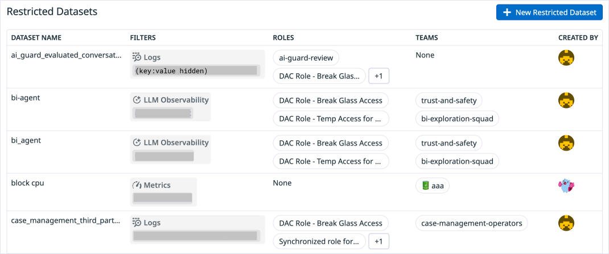
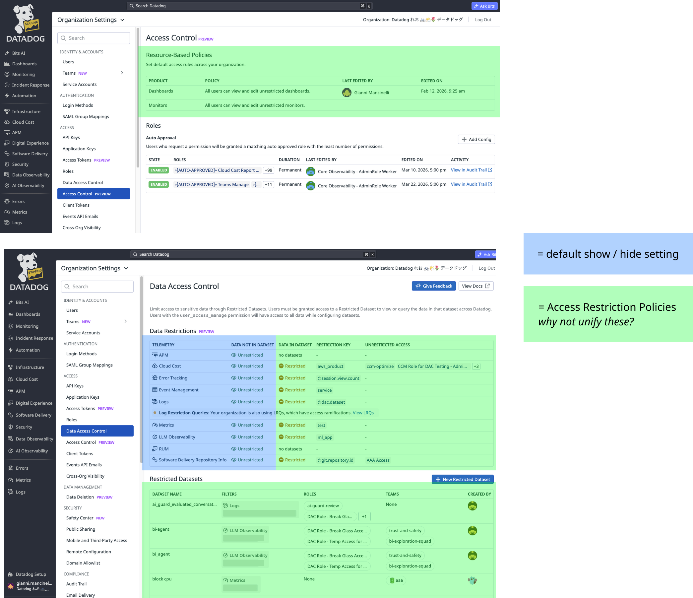
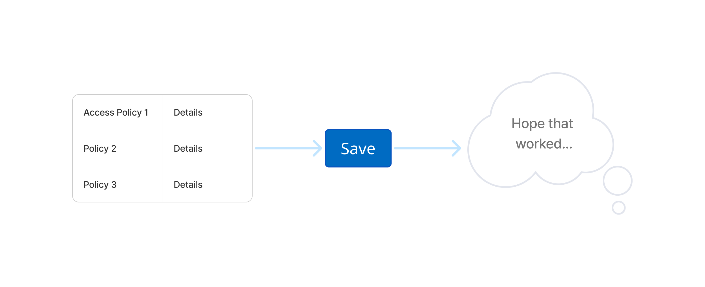
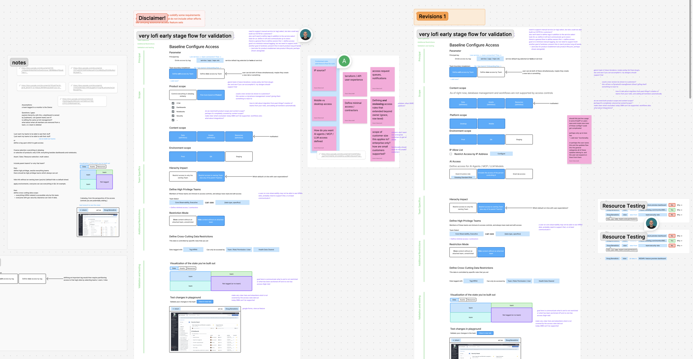
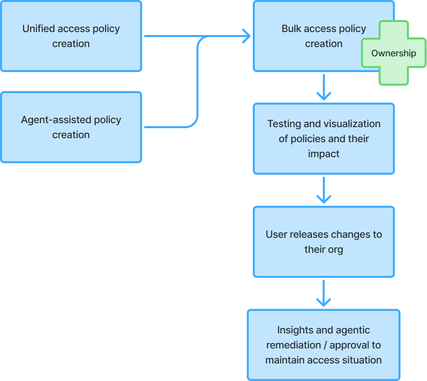

Access Center
Building a scalable access system for our largest customers that unifies a dozen disparate features.

Problem Space
Lack of Scalability
Rule creation on a row by row basis is not scalable when you want to partition edit or view access for each team.

Disparate Feature Set
Previous efforts had released lighter features a la carte, leading to a disjointed, arcane user experience.

Anxiety Inducing
Current systems had zero visibility into the potential impact of access policies, so users had to just set the rules and hope they worked.

Risks to Business
We had urgent churn risks of at least $500k/month (but likely more) where customers didn't want to pay for a platform for which they can't control access at scale.
Process
Lofi pairing and ideation

Laying out the vision

Final Designs


Impact
Delivered systems that answer the immediate need while also rallying the team around a design vision for the next few quarters.
United the team around plans for internal release, presentation at Datadog's DASH conference, and beyond.
Closed loop with customers to get feedback and calm worries about churn.